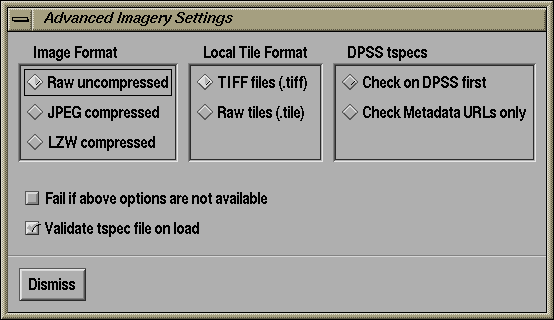

The Advanced Connection Options dialog lets you control the way that TerraVision selects the most appropriate dataset to connect to for either the Image or the DEM dataset. It is accessed by clicking on one of the "Advanced..." button of the File/Open TV menu.

The Image Format options let you specify if you want to use a dataset instance that is stored as a raw bitmap, JPEG compressed, or LZW compressed. By default, setting this option is a hint only. If the dataset does not exist in the requested image format, then TerraVision will try to find another image format to use. However, if you check the option "Fail if above options are not available", then TerraVision will fail to connect to the dataset if the requested image format is not available.
The Local Tile Format options let you specify if you want to use a dataset instance that is stored as a tiled TIFF files or raw tile files. The TIFF file representation stores all tiles for a single pyramid level in one tiled file. The raw tile files consist of a separate file for every tile in the entire pyramid. Raw tile files only exist in the raw image format (not JPEG or LZW). By default, setting this option is a hint only. If the dataset does not exist in the requested tile format, then TerraVision will try to find another tile format to use. However, if you check the option "Fail if above options are not available", then TerraVision will fail to connect to the dataset if the requested tile format is not available.
The DPSS tspecs options let you specify where TerraVision should look for the tspec files for a DPSS dataset. Tspec files contain all of the metadata describing a dataset. For a DPSS dataset, these can reside on the DPSS itself, or on some separate (http or localdisk) server that the DPSS records in a list of Metadata URLs. By default, TerraVision will check to see if the tspec file exists on the DPSS. If it does, then it will use that metadata file.
Finally, the "Validate tspec file on load" option tells TerraVision to perform a number of consistency checks on the metadata that it reads in from the tspec file. For details on what checks this actually performs, refer to the documentation for the tsmValidateTspec function. It is generally a good idea to keep this option checked.